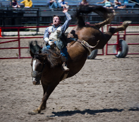
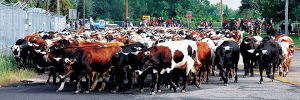
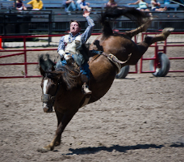
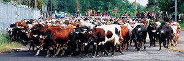

Cheyenne Boots
Across Cheyenne, there are 25 boots painted by the area’s artists. Here are a few:

Started in 1897, Frontier Days boasts the largest outdoor rodeo and Western Celebration in the world. Daily events include a rodeo to attend during the day and musical guests at night. In addition, there is fun for the whole family with rides, games, and carnival fare. Frontier Park also houses the Frontier Days Old West Museum. Check out the collection of Western carriages, enjoy a narrative of Frontier Days history, and stop by the gift shop for official Frontier Days gear.
Frontier Days 2020 will take place Friday, July 17-Sunday, July 26. Check out the official Cheyenne Frontier Days website for the most up-to-date schedule and tickets: www.cfrodeo.com
The 2020 lineup includes the PRCA Pro Rodeo, Blake Shelton, Cody Johnson, Trace Adkins, the Grand Parade, and USAF Thunderbirds. Get your tickets (and especially your accommodations) very soon!
 



Across Cheyenne, there are 25 boots painted by the area’s artists. Here are a few: